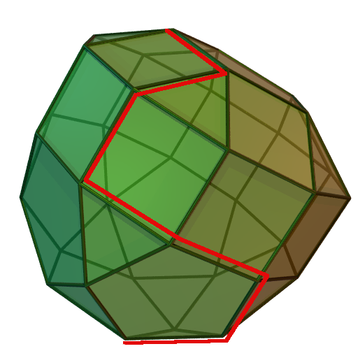

Introducción
La programación lineal es un tipo de modelo matemático especial enfocado en describir un problema de optimización haciendo uso de funciones lineales (líneas para dos variables (2D, o $R^2$), planos para tres variables (3D, o $R^3$), o hiperplanos para dimensiones superiores ($R^n$)). En consecuencia, el término programación se relaciona más con la definición del problema y su solución, mientras el componente lineal hace referencia al tipo de modelos matemáticos, en síntesis, programación lineal es la manera en la cual se realizan actividades, o toman decisiones para lograr un objetivo de manera óptima, donde la relación entre estas actividades o decisiones se da de manera lineal.
Por tanto, un problema de programación lineal (Linear Programming, LP) es un problema matemático en que todas las funciones matemáticas son lineales en las incógnitas; consta de una función especial denominada Función Objetivo, y un grupo de funciones especiales denominadas Restricciones, las cuales pueden ser de igualdades o desigualdades. Según expone (CITA) La forma exacta de estas restricciones puede variar de unos problemas a otros; sin embargo, cualquier programa lineal se puede convertir a la siguiente forma estándar:
minimizar \begin{equation*} c_1x_1+c_2x_2+c_3x_3+...+c_nx_n \end{equation*} sujeto a: \begin{equation*} a_{11}x_1+a_{12}x_2+a_{13}x3+\dots+a_{1n}x_n=b_1\\ a_{21}x_1+a_{22}x_2+a_{23}x3+\dots+a_{2n}x_n=b_2\\ \vdots \\ a_{m1}x_1+a_{m2}x_2+a_{m3}x3+\dots+a_{mn}x_n=b_m\\ \end{equation*}
donde $b_i$, $c_i$ y $a_{ij}$ son constantes reales fijas, y las $x_i$ son las variables del problema, es decir, se desea hallar el valor de las distintas $x_i$ de manera tal que se halle el óptimo del problema. En su forma estándar, se busca que se cumpla la restricción $b_i >= 0$, para ello de manera independiente cada restricción puede ser multiplicada por menos uno $(-1)$. Teniendo en cuenta que a medida que se definan más restricciones, o se describe el problema con más variables, su notación aumenta significativamente se acostumbra de escribir la forma estándar de manera vectorial, su expresión se muestra a continuación: minimizar \begin{equation*} c^Tx \end{equation*} sujeto a: \begin{equation*} Ax=b, \ x>=0 \end{equation*}
donde $x$ es un vector columna con tamaño $n$, $c^T$ es un vector fila n-dimensional, $A$ es una matriz de dimensiones $mxn$, y $b$ es un vector columna de dimensión $m$. Además, el conjunto de restricciones $x>=0$ quiere decir que todas las variables de decisión son positivas.
Una vez definido el problema de optimización lineal, es necesario asiganar el valor a las difernetes $x$ de manera tal que satisfagan todas las restricciones, a la par de obtener el máximo o mínimo valor posible de la función objetivo. Esta asignación no puede ser arbitraria y, para ello, en el presente capítulo se mostrán algunos métodos comenzando desde el más sencillo (método gráfico) que puede ser visualizado en 2D, hasta el simplex y algunas variantes.
¿Cómo resolver un problema de programación lineal?
De manera general, todos los problemas de optimización pueden ser estructurados en cinco pasos, estos parten desde la descripción del problema o situación a mejorar, su descripción mediante funciones matemáticas, el hallazgo de posibles soluciones y la selección de una solución final, que puede ser óptima o no dependiendo del problema. Los cinco pasos se muestran a continuación.
- Definir las variables de decisión
- Construir la función objetivo
- Determinar el criterio de decisión
- Construir el espacio de búsqueda
- Construir el espacio de soluciones
Definir las variables de decisión
Es fundamental una vez descrito el problema a solucionar determinar el tipo de variables. Según las variables a usar (binarias, enteras, y/o contínuas (Ver la sección de modelado matemático)), es necesario aplicar diferentes métodos de solución, además, dependiendo del fenómeno a modelar algunas variables son más prácticas. Por ejemplo, se acostumbra a utilziar variables binarias para representar las diferentes asignaciones, a modo de ejemplo, la variable $x{o,c}$ toma el valor de 1 si al operario Pedro trabaja se le asigna la máquina 4. En este caso $x{o,c}$ es una matriz que combina todos los posibles operarios (supongamos cinco: ${Alonso, Beatriz, Carmen, Diego, Efren}$), con todas las máquinas disponibles, a modo de ejmplo consideremos cuatro máquinas: ${máquina_1, máquina_2, máquina_3, máquina_4}$, por tanto, $x_{o,c}$ es un conjunto de 20 varaibles.
En cuanto a las varaibles enteras y contínuas, estas son afines en su uso y sú implicación práctica para modelar es si la cantidad puede ser fraccionada o no. Por ejemplo, se puede suponer que se desea determinar la cantidad necesaria de impresoras 3D requeridas para fabricar unos repuestos. Si estoy considerando en comprar las máquinas lo más recomendado es usar varaibles enteras ya que no puedo comprar máquinas a medias; por otro lado, si el problema implica el alquiler de máquinas y este pueda alquilarse por tiempo parcial, es recomendado trabajar con variables contínuas ya que puedo alquilar 5.5 máquinas, es decir, cinco máquinas tiempo completo y una máquina a medio tiempo.
Construir la función objetivo
Determinar el criterio de decisión
Construir el espacio de búsqueda
Construir el espacio de soluciones
Como conclusión, estos son los pasos requeridos para solucionar un problema de programación lineal:

¿Cómo usar este libro?
MIO es un libro práctico enfocado a la investigación Operativa, posee las características de manual o handbook con la particularidad de desarrollar y resolver ejercicios en el lenguaje de programación R. Está dividido por capítulos relacionados con estrategias de modelado matemático para la toma de decisiones, en cada uno de éstos se encuentran explicaciones teóricas, ejercicios resueltos y propuestos, así como la presentación y explicación de herramientas de base tecnológica (particularmente paquetes).
El libro puede ser usado por profesores como una guía para la creación de ejercicios básicos a usar de ejemplo en los contenidos curriculares asociados a materias como Investigación de Operaciones. En el caso de estudiantes, sirver como material de estudio y se enfoca principalmente en reforzar el uso de la herramienta R.
¿Por qué el uso de estas tecnologías?
La estructura del MIO se basa en la implementación de contenidos programaticos utilizando Notebooks, éstos son unas herramientas muy útiles para resolver ejercicios utilizando lenguajes de programación de alto nivel, en conjunto con herramientas visuales. Para el uso de Notebooks se propone trabajar con Jupyter que es una herrameinta contenida en ANACONDA. ANACONDA es una paltaforma que permite el uso dele lenguale Python, con un enfoque particular en el análsis o ciencia de datos, aprendizaje automático y aplicación de técnicas de inteligencia artificial. ANACONDA permite el trabajo colaborativo con la facilidad de integrar diferentes lenguajes de programaciçon a partir de la instalación de kernels. Entre las diferentes herramientas se encuentra Jupyter Notebook, que es una aplicación web de código abierto que permite crear y compartir documentos que contienen código interactivo, ecuaciones escritas en LaTeX, visualizar herramientas desarrolladas en JavaScript, e insertar texto narrativo o descriptivo. Mediante los Notebboks de Jupyter es posible ejecutar una limpieza y transformación de datos, simulación numérica, modelado estadístico, visualización de datos, aprendizaje automático, entre otras cosas más.
¿Cómo empezar a utilizar ANACONDA y el lenguaje R en Python?
Usar R en un Notebook de Python
Para poder aprovechar la incorporación de herramientas dinámicas en un Notebook de Python y, de manera simultánea usar R, hay diferentes opciones. Si el interés es trabajar de manera simultánea los dos lenguajes es necesario instalar rpy2, el cual es un proyecto que permite generar una interfaz de R en Python. Para instalarlo es necesario abrir el cuadro de comandos de ANACONDA (anaconda prompt), y ejecutar el siguiente comando.
conda install rpy2
Una vez instalado, es posible usar la interfaz de R mediante la ejecución de una celda tipo mágica (magics cells); sin embargo, es necesario ejecutar por una sola vez el siguiente código en alguna celda.
%load_ext rpy2.ipython
Ahora bien, es necesario resaltar que se recomienda cargar primero el paquete de pandas de python usando el siguiente código:
import pandas as pn
La otra manera es creando directamente un Notebook con un kernel que soporte R. Para ello se puede cargar el kernel desde ANACONDA Navigator siguiendo estos pasos:
- Abrir ANACONDA Navigator.
- Dar clic en la sección de Enviroments (Menú vertial al lado izquierdo de la pantalla).
- Dar clic en la opción Create (Menú horizontal en la parte inferior de la pantalla).
- Seleccionar R, y aceptar los cambios.
No obstante, el presente manual está diseñado para que los códigos funcionan en otra interfaz de desarrollo como RStudio.